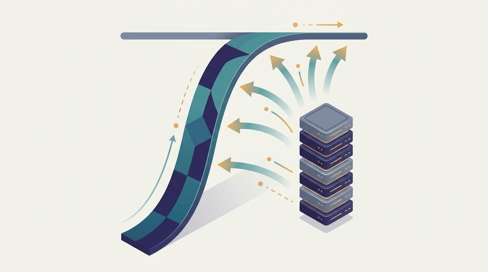

"They doubled my replica count and expected me to run twice as fast. I spend ninety percent of my time waiting on the all-reduce. The other replica is identical, so now we wait together, in perfect synchrony, at exactly the old speed."
A GPU Idling on a Communication Barrier
Adding machines is an investment, and like any investment it has a return that you can estimate in advance instead of discovering after the bill arrives. Chapter 1 named the axes along which AI distributes and Chapter 2 supplied the systems machinery each axis runs on, both in words. This chapter makes the central question quantitative: when you go from one machine to many, exactly how much faster does the work finish, what fraction of the new hardware is doing useful work, and is the speedup worth what it costs. You will build a small toolkit of models that answer this. Speedup and efficiency define the target. Strong and weak scaling pin down what "faster" even means when the problem size can move. Amdahl's law and Gustafson's law bound the payoff from the serial fraction and from growing the workload. Work and depth expose the parallelism a computation can ever expose. The roofline model says whether a kernel is starved for compute or for memory bandwidth. Communication cost models price every message a collective sends. Scaling efficiency and cost-awareness fold all of it into the only number a budget cares about: useful results per dollar. By the end you can look at a proposed cluster size and predict, on paper, whether it will help.
Chapter Overview
Scalability has a reputation for being qualitative, a property a system either has or lacks. This chapter treats it as something you compute. Every model here takes a workload and a machine count and returns a number: a speedup, an efficiency, a runtime, a cost. The models are deliberately simple, because their value is not precision to three decimal places but the ability to rule out a bad plan before you pay for it. A model that tells you a job is ninety percent serial, or that a kernel is memory bound, or that the all-reduce will dominate past sixteen nodes, has earned its keep even if its constants are rough.
The chapter builds from definitions to laws to mechanisms to economics. Section 3.1 asks what scaling actually means and defines speedup and efficiency as the two numbers everything else refines. Section 3.2 separates the two physical directions of growth, scaling out across machines and scaling up within one, and explains why this book leads with the former. Section 3.3 draws the distinction that governs every benchmark you will read: strong scaling holds the problem fixed while weak scaling grows it with the machine count. Section 3.4 makes the user-facing metrics precise, separating latency from throughput and exposing why the tail, not the average, sets the experience.
The middle of the chapter states the classical laws. Section 3.5 presents Amdahl's law, the pessimist that bounds speedup by the serial fraction, alongside Gustafson's law, the optimist that recovers scalability by letting the problem grow. Section 3.6 reframes parallelism through work and depth, the language that says how much speedup a computation could ever admit regardless of the machine. Section 3.7 introduces the roofline model, the single picture that tells you whether a kernel is limited by arithmetic throughput or by memory bandwidth, and what to do about each case.
The chapter closes on the two taxes that distribution always charges. Section 3.8 prices communication with the alpha-beta model, turning every collective into a predictable latency-plus-bandwidth cost. Section 3.9 assembles everything into scaling efficiency and cost-awareness, the discipline of asking not just whether more machines run faster but whether they run cheaper per unit of useful work. Read in order, the nine sections take you from "scaling sounds good" to "here is the number, and here is why this cluster size is the right one."
Prerequisites
This chapter assumes you have read Chapter 1: What Is Scale-Out AI? and Chapter 2: Distributed Systems Concepts for AI. From Chapter 1 you carry the six axes of distribution, the scale-out versus scale-up distinction, and the four operational metrics of throughput, latency, cost, and reliability; this chapter turns those metrics into equations. From Chapter 2 you carry the systems machinery, communication and collectives, partitioning, stragglers, and locality; this chapter prices that machinery, so the straggler you met in words becomes a term in a throughput equation and the all-reduce becomes a cost you can predict. No prior performance-modeling or high-performance-computing coursework is needed; every law is derived from first principles. The probability, calculus, and linear-algebra background the book assumes, refreshed in Appendix A: Mathematical Background, is enough for every derivation here.
Learning Objectives
- Define speedup and parallel efficiency, compute them from a runtime measurement, and explain what each one isolates about a scaling experiment.
- Distinguish scaling out from scaling up and strong scaling from weak scaling, and choose the right scaling study for a given workload and question.
- Separate latency, throughput, and tail latency, and reason about which one a training job versus a serving system is actually optimizing.
- Apply Amdahl's law and Gustafson's law to bound the speedup of a workload from its serial fraction and from how its problem size grows with the machine count.
- Use work, depth, and the resulting parallelism to state the maximum speedup a computation can ever expose, independent of the hardware it runs on.
- Read a roofline plot to classify a kernel as compute bound or memory bound, and price a collective with the alpha-beta communication model to fold both compute and communication into a scaling-efficiency and cost-per-result analysis.
If you keep one thing from this chapter, keep this: scaling is an investment whose return you can predict, and the return is bounded by what cannot be parallelized, by what the machines must communicate, and by what the hardware can move, all of which you can put a number on before you launch. Read forward, the sections are the instruments that produce those numbers: speedup and efficiency, scaling out versus up, strong versus weak, latency versus throughput, Amdahl versus Gustafson, work and depth, the roofline, the alpha-beta cost, and the cost-per-result. Read as a question, the chapter is a checklist you apply to any scaling proposal: what is the serial fraction, does the problem grow with the cluster, is the kernel compute or memory bound, how much will the collectives cost, and does the efficiency justify the dollars. The roadmap below walks the nine sections that turn that checklist into arithmetic.
Chapter Roadmap
- 3.1 What Does It Mean to Scale? Defines scaling precisely and introduces speedup and parallel efficiency, the two numbers that every later model in the chapter refines or qualifies.
- 3.2 Horizontal and Vertical Scaling Separates scaling out across many machines from scaling up within one, and explains why distributed AI leads with the horizontal direction.
- 3.3 Strong and Weak Scaling The distinction behind every scaling benchmark: holding the problem fixed as you add machines versus growing the problem in step with them.
- 3.4 Latency, Throughput, and Tail Latency Makes the user-facing metrics precise, separating how long one request takes from how many finish per second, and why the tail dominates.
- 3.5 Amdahl's Law and Gustafson's Law The pessimist that bounds speedup by the serial fraction and the optimist that recovers scalability by letting the workload grow with the machines.
- 3.6 Work, Depth, and Parallelism The hardware-independent language of parallelism: total work, critical-path depth, and the maximum speedup their ratio can ever permit.
- 3.7 The Roofline Model The single plot that classifies a kernel as compute bound or memory bound from its arithmetic intensity, and points to the right optimization.
- 3.8 Communication Cost Models The alpha-beta latency-and-bandwidth model that prices each message a collective sends, turning communication into a predictable term in a runtime equation.
- 3.9 Scaling Efficiency and Cost-Awareness The chapter's capstone: folding compute, communication, and price into useful results per dollar, the only metric a cluster budget answers to.
Read the nine sections in order and you will hold the quantitative toolkit the rest of the book applies on every page: Section 3.1 defines the target, Sections 3.2 through 3.8 build the laws and mechanisms that bound it, and Section 3.9 turns the bound into a budget. The thread to watch begins with the communication cost of Section 3.8: the alpha-beta price you put on an all-reduce here becomes the quantity that the collective algorithms of Chapter 4 exist to minimize, and the reason data-parallel training in Part IV stops scaling at a measurable cluster size.
What's Next?
This chapter gave you the equations of scaling: speedup and efficiency, strong and weak studies, Amdahl and Gustafson, work and depth, the roofline, the alpha-beta communication cost, and the cost-per-result that ties them together. Chapter 4: Communication Primitives for Distributed Training turns the most expensive term in those equations into a design space. The all-reduce you priced abstractly in Section 3.8 becomes a family of concrete algorithms, ring, tree, and recursive halving, each with its own alpha-beta signature; the bandwidth term you treated as a constant becomes something an algorithm and a topology negotiate. Read it next, and the communication cost this chapter taught you to estimate will become a quantity you can engineer down.
Bibliography & Further Reading
Foundational Papers
Amdahl, G. M. "Validity of the Single Processor Approach to Achieving Large Scale Computing Capabilities." AFIPS Spring Joint Computer Conference, 1967. dl.acm.org
The original three-page argument that a program's serial fraction caps its speedup; the pessimist's law derived from first principles in Section 3.5.
Gustafson, J. L. "Reevaluating Amdahl's Law." Communications of the ACM 31(5), 1988. dl.acm.org
The rebuttal that rescues scalability by scaling the problem with the machine count; the optimist's law that Section 3.5 sets against Amdahl.
Williams, S., Waterman, A., Patterson, D. "Roofline: An Insightful Visual Performance Model for Multicore Architectures." Communications of the ACM 52(4), 2009. cacm.acm.org
The paper that introduced the roofline plot and arithmetic intensity; the compute-bound-versus-memory-bound diagnosis at the heart of Section 3.7.
Blelloch, G. E. "Prefix Sums and Their Applications." Technical Report CMU-CS-90-190, Carnegie Mellon University, 1990. cs.cmu.edu
The canonical treatment of work and depth through the scan primitive; the hardware-independent parallelism language Section 3.6 adopts.
Communication & Collectives
Thakur, R., Rabenseifner, R., Gropp, W. "Optimization of Collective Communication Operations in MPICH." International Journal of High Performance Computing Applications 19(1), 2005. mcs.anl.gov
The reference cost analysis of all-reduce, broadcast, and reduce-scatter under the alpha-beta model; the source of the communication formulas in Section 3.8.
Goyal, P., Dollar, P., Girshick, R., et al. "Accurate, Large Minibatch SGD: Training ImageNet in 1 Hour." arXiv:1706.02677, 2017. arxiv.org/abs/1706.02677
The empirical demonstration that data-parallel training scales to hundreds of GPUs once communication and the learning rate are handled; the weak-scaling case study of Section 3.3 in practice.
Books & Surveys
Hennessy, J. L., Patterson, D. A. "Computer Architecture: A Quantitative Approach." 6th Edition, Morgan Kaufmann, 2017. elsevier.com
The standard text on quantitative performance analysis, memory hierarchies, and the roofline numbers; the architectural grounding under Sections 3.4 and 3.7.
McCool, M., Reinders, J., Robison, A. "Structured Parallel Programming: Patterns for Efficient Computation." Morgan Kaufmann, 2012. elsevier.com
A practitioner's treatment of work-depth analysis and parallel patterns; the constructive complement to the parallelism theory of Section 3.6.
Dean, J., Barroso, L. A. "The Tail at Scale." Communications of the ACM 56(2), 2013. cacm.acm.org
The definitive account of why tail latency, not average latency, governs the experience of a large fleet; the systems grounding for the tail-latency treatment of Section 3.4.
Tools & Libraries
NVIDIA Collective Communications Library (NCCL) Documentation. docs.nvidia.com
The production all-reduce and reduce-scatter implementation that realizes the communication-cost minimization Section 3.8 analyzes; the library every later parallel-training chapter calls.
NVIDIA Nsight Compute: roofline analysis for GPU kernels. docs.nvidia.com
The profiler that draws an empirical roofline for a real kernel and locates it as compute or memory bound; Section 3.7's model as a measurement you can run.